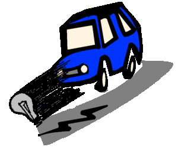
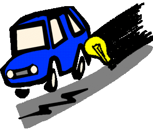
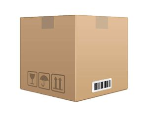

Thomas Alva Edison
 De: La Frikipedia, la enciclopedia extremadamente seria.
De: La Frikipedia, la enciclopedia extremadamente seria.

|
La información contenida en este artículo es una mínima parte de su jugo total, así que ponte los guantes, saca el tupperwere y empieza a exprimir el tema. Si lo haces serás recompensado con una galleta en almíbar y algo más.
|
De la serie grandes personajes:
Grupo de funcionarios haciendo uso de una de las celebérrimas creaciones de Edison.
| Nacimiento
|
Cuando se hizo la luz (concretamente, la dió su madre)
|
| Muerte
|
Cuando no pudo pagar la tarifa de la luz
|
| Ocupación
|
Reconocido científico loco
|
| Nacionalidad
|

|
| Malo o bueno
|
Roñoso, que se comió to'l capitaaaal...Y Enemigo mortal de Tesla
|
| Atentados contra la humanidad
|
¿Iluminar nuestras vidas es un atentado?
|
| Religión
|
Cristiana, pero cuando murió le endosaron 10.000 pelas por no apagar la luz al final del túnel.
|
| Notas
|
Si hubiera sacado malas notas hubiera sido barrendero, soplador de hojas en otoño o periodista de la prensa rosa.
|
Thomas Alva Edison era un hombre ciertamente friki, pero no friki de miro un poquitin cosas tontas, era friki de creer que podía hacer luz un revolucionario creo la primera bombilla, que funcionaba con piedras, nadie le quiso prestar fondos para poder costearse los utensilios de fabricación de bombillas, asin que tubo que buscarse la vida como todos los listos.
No sólo creo la bombilla, esta solo fue la mas excepcional de sus creaciones, pero una pequeña parte de todo su potencial sexual cientifico. También fue el inventor de el pelo humeante, las lechugas saltarinas, lechugas de crecimiento rapido... y de mas inventos que se mencionaran mas adelante en este mismo articulo.
Edison nació en FrikiTown Oscurolandia, un lugar que le inspiro a crear la bombilla. En su niñez jugaba mucho con cerillas, y su madre en vez de pensar que eso podría ser un trastorno, siguió apoyándole en ser un "iluminador".
A los 27 años inicio su viaje por el mundo de yupi la ciencia, creando una gran gama de inventos renovadores, y otros, bueno la ciencia tiene sus ratoneras. Y asin a los 38 años ya tenia mas de 700 inventos (nosotros solo pondremos los que siguieron un curso estable y se siguen usando en la actualidad).
Motivo por el que Edison invento la bombilla
En su país natal, Oscurolandia, la oscuridad era muy abundante, y Edison quiso poner fin a tanta mierda oscura.  Aquí la oscuridad el día que Edison acabo la primera bombilla, se puede apreciar la sorpresa del Caballo cuadrado azul al verla.
 La luz de Edison siguiendo a la oscuridad, se puede apreciar los rayitos negros en el camino que delatan que la oscuridad anda cerca
Inventos y usos
Esto es una reducida lista de inventos de Edison (si alguno sabe algún otro invento de Edison importante que no este mencionado aquí, pongalo por favor):
- La Bombilla: Tambien conocida como "la patata luminosa". Juntada con una corriente de energía eléctrica, la bombilla es capaz de generar
lacasitos luz propia.
- Lechuga de crecimiento rápido: Muy útil, era una hortaliza que crecía en 2 horas. Con esto Edison pretendía acabar con el hambre en el mundo, pero fracaso estrepitosamente cuando se dio cuenta que la lechuga producía una enfermedad crónica conocida como "Cancer".
- Bomba de felicidad: Era una bomba en si, pero que al explotar desprendía mortales ponys rosas. Esta arma fue retirada inmediatamente despues de su lanzamiento en Singapur.
- Un aparato al que el llamaba Pc 1.0: Pero nunca llego a desarrollarlo, decía que no iba a tener gancho comercial, y que nunca le daría beneficios, que fue la razón para su invención.
- Sonda Haley: Fue uno el primer satélite lanzado, pero por el mismo echo de la falta de conocimientos sobre lanzar cosas al espacio, el satélite colisiono contra un asteroide, y allí acabo su cometido, que iba a ser si había rocas en el espacio.
- Zords: En si eran robots gigantes hechos de cartón, como a el no le servían de mucho y no conseguía venderlos, se los regalo a su mejor amigo, Zordon.
Tipo de materia y campos de física en los que trabajaba
Edison trabajaba en los campos de la Luminosidad autonoma, y de Inventos anonimos con grandes usos característicos.  Miles de estas tuvo que vender Edison para costearse los estudios
Estos geniales campos eran de difícil estudio, y caros tal que asin. Por ese motivo, Edison tubo que vender sus órganos sexuales bienes prescindibles para poder costearselos. Sobre todo los libros que había heredado de su padre, que era un prestigiado escritor en grandes periódicos de aquella época.
Enemigos
Edison tenia una gran cantidad de enemigos, ya que su grandisimo ego, no era aceptado en la sociedad barbara en la que vivia. Edison consiguio asesinar vilmente y que pareciera un accidente a todos esos mamones que le odiaban quitarse a esos enemigos suyos de manera dialogada...
Enemigos fueron brutalmente asesinados.
Autor(es):
- Doctor grijander
- Frikiman
- Conan
- Artemio
- Dark temptation
- Harry El del Pote
- Elnutri
- Sakki
- Generibot
- Pepino-Man10
Frikipedia 2005-2016, Licencia
GFDL 1.2 - Extraído por FrikiLeaks